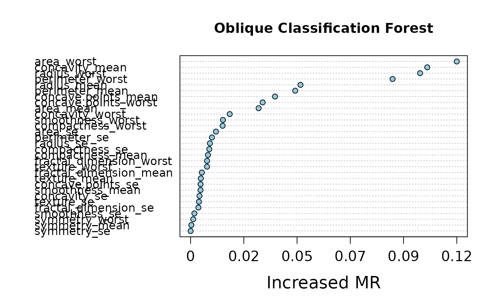

Dotchart of variable importance as measured by an Oblique Decision Random Forest.
Usage
# S3 method for class 'VarImp'
plot(x, nvar = min(30, nrow(x$varImp)), digits = NULL, main = NULL, ...)
Arguments
- x
An object of class VarImp.
- nvar
number of variables to show.
- digits
Integer indicating the number of decimal places (round) or significant digits (signif) to be used.
- main
plot title.
- ...
Arguments to be passed to methods.
Value
The horizontal axis is the increased error of ODRF after replacing the variable, the larger the increased error the more important the variable is.
Examples
data(breast_cancer)
set.seed(221212)
train <- sample(1:569, 200)
train_data <- data.frame(breast_cancer[train, -1])
forest <- ODRF(train_data[, -1], train_data[, 1], split = "gini",
parallel = FALSE)
varimp <- VarImp(forest, train_data[, -1], train_data[, 1])
plot(varimp)
